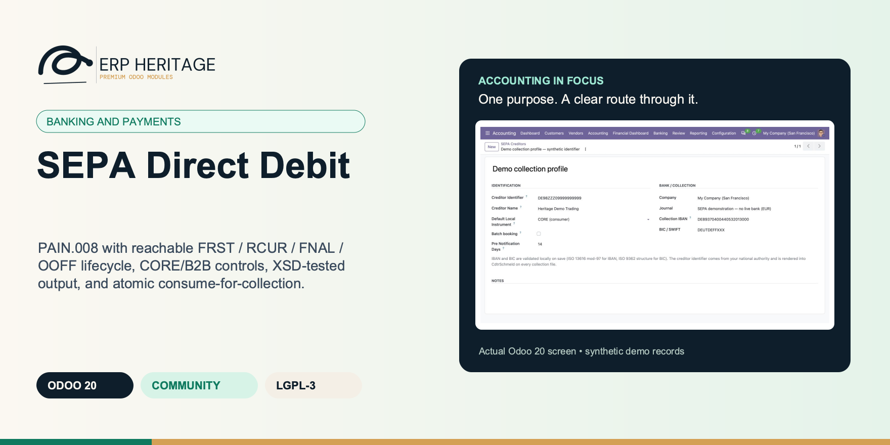
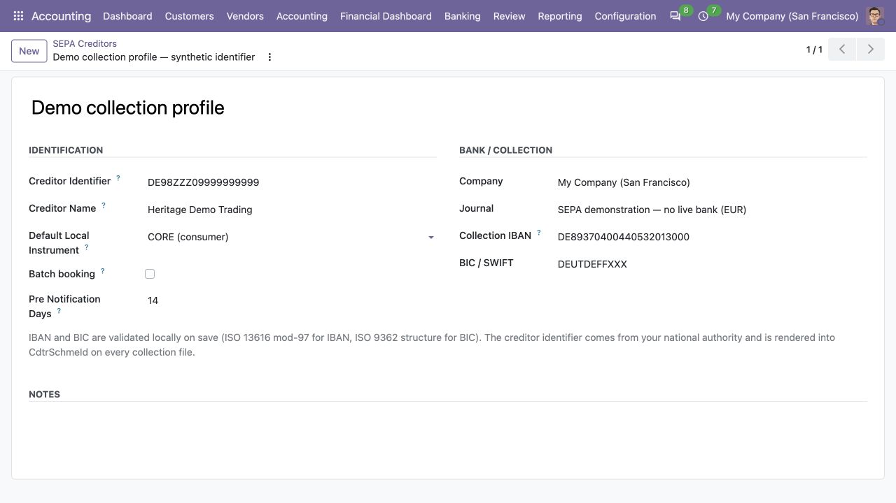
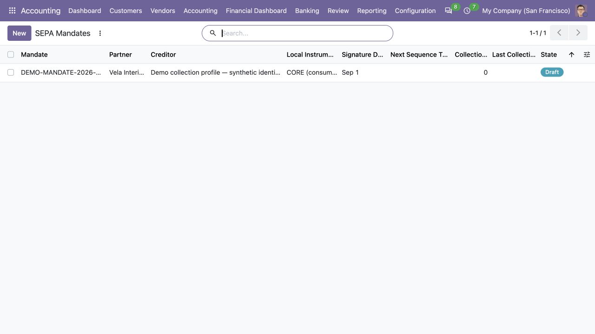
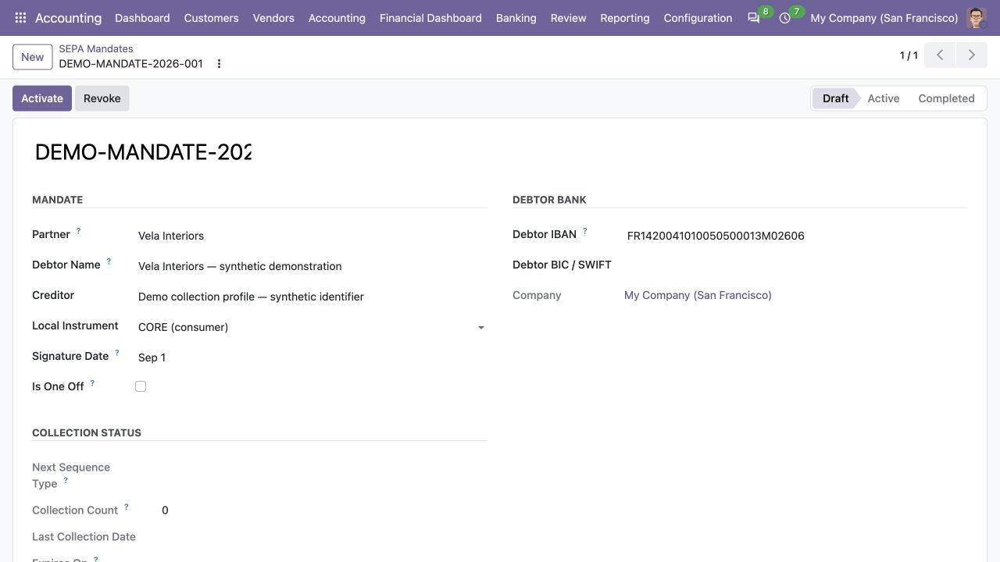

ERP HERITAGE / ODOO 20 COMMUNITY
PAIN.008 with reachable FRST / RCUR / FNAL / OOFF lifecycle, CORE/B2B controls, XSD-tested output, and atomic consume-for-collection.
LGPL-3 · Odoo 20 · v20.0.1.2.0 · Module guide, setup, workflows and rollout checks
The purpose
SEPA Direct Debit for Odoo 20 Community collects EUR payments from customer bank accounts via the SEPA Direct Debit scheme. It pairs with the Recurring Invoices module for subscription collection and with Batch Payment for ad-hoc collection runs.
Inside Odoo 20
Captured from Odoo 20 Community using synthetic demonstration records. Configuration screens show the available workflow; external service connectivity still requires the relevant provider setup and validation.

Synthetic creditor profile configures collection account, creditor identifier and prenotification period.
Captured 2026-09-22 from isolated Odoo 20 Community database with synthetic demonstration records. No external submission or live banking activity is represented.

Mandate register lists the draft authorization and its collection sequence; no collections have run.
Captured 2026-09-22 from isolated Odoo 20 Community database with synthetic demonstration records. No external submission or live banking activity is represented.

Draft mandate records the synthetic debtor bank details and signature date before activation.
Captured 2026-09-22 from isolated Odoo 20 Community database with synthetic demonstration records. No external submission or live banking activity is represented.
Inside this module
Targets the published namespace and validates generated output against the official PAIN.008.001.02 XSD in the cross-version gate.
On collection the mandate consume bumps the FRST to RCUR counter via SQL UPDATE so concurrent collections cannot lose an increment.
The collection path and cron expire both used and never-collected mandates after 36 months from the controlling date.
IBAN, agent, and debtor-name amendments write append-only evidence and render once under current EPC placement rules.
A live file blocks a second cut; controlled void and re-cut reuse immutable payment sequence/amendment evidence.
Withdrawn COR1 is unavailable. B2B requires a business debtor plus recorded bank confirmation.
From input to outcome
Register mandate evidence and review status, sequence and dormancy before preparing the collection cut. Gather mandates, creditor identifier, debtor bank details, collection amounts, sequence types and scheme settings. Use a representative case with a known expected result so the team can separate configuration decisions from unexpected behaviour. Keep the supporting commercial or accounting evidence available during review.
Generate the supported direct-debit XML for eligible items using the company’s creditor and booking policy. Follow the record’s available actions in the order intended by the workflow. Review the selected company, relevant dates and any validation messages before continuing. If the source data changes, reassess the result against the updated evidence.
Inspect mandate consumption and amendment history, then check the bank’s response through the organisation’s collection process. Compare the outcome with the expected treatment for this case and record the reason for any difference that requires follow-up. Give exceptions an owner so they do not disappear inside a period-end spreadsheet.
Treat mandate authority, customer notification and bank scheme enrolment as operational responsibilities alongside the file generator. Include the accepted operating example, configuration choices and unresolved dependencies in the handover. Review them when business policy, source data or the surrounding Odoo applications change.
Business situations
SEPA Direct Debit is relevant to receivables and direct-debit collection teams who need to answer this question: Which customer collections have valid mandates and can enter the next direct-debit file? Start with the process that creates the decision, identify its owner and agree what evidence the reviewer needs. A narrow pilot helps the team evaluate the supported workflow using its own accounting data before broadening access.
Use the module’s banking and payments role as one part of a controlled close. Bring the relevant mandates, creditor identifier, debtor bank details, collection amounts, sequence types and scheme settings to the review, then explain the result alongside the business event it represents. Establish which outputs become part of the reporting pack and which outstanding matters need a separate accounting decision.
Turn the business question into an acceptance case: Which customer collections have valid mandates and can enter the next direct-debit file? Use one ordinary example and one relevant exception from the supported scope below. Ask the intended operator to prepare it and the reviewer to explain the result. Retain that accepted example with the deployment notes so future changes can be assessed against an understood process.
Before the first result
Confirm that the organisation needs the supported banking and payments process described here. Identify the responsible receivables and direct-debit collection teams and write down the decision they expect the module to support. Use the limitations section to separate shipped behaviour from an integration, professional judgement or operational service that needs another owner.
Prepare mandates, creditor identifier, debtor bank details, collection amounts, sequence types and scheme settings. Check the relevant records in the intended company and use dates that match the business event. Resolve missing accounting configuration before evaluating calculated output; plausible-looking totals do not establish that the chosen inputs or policies are correct.
This module declares Accounting Suite Base, Batch Payment, SEPA Credit Transfer as part of its installation foundation. Its direct standard-Odoo dependencies are account. Review the actual dependency set in the target database before a rollout, especially where another addon also extends the same accounting models, menus or posting actions.
Define who operates SEPA Direct Debit, who reviews unusual results and who maintains configuration. Run the representative workflow below in a test database using the intended users. Confirm that users can reach the work they own and that the reviewer understands the available evidence before moving the process into live operation.
Workflow reference
The PAIN.008.001.02 XML is original work, written strictly from the public ISO 20022 specification and the SEPA Direct Debit Scheme Rulebook. Tests parse the generated XML back with lxml and assert the scheme structure: namespace, sequence type, local instrument, the mandate-related block, creditor identifier, charge bearer, and control sum.
The mandate state machine encodes the FRST, RCUR, FNAL, OOFF transitions exactly as the rulebook describes. The first collection on a mandate renders as FRST, and an atomic SQL counter increment flips it to RCUR automatically thereafter, so concurrent collection attempts cannot race the transition. Mandate states are Draft, Active, Completed, Revoked, and Expired.
The scheme's 36-month dormancy rule is double-enforced: on the collection path and on a daily cron that processes each mandate inside its own savepoint, so one bad record never aborts the batch.
IBAN and BIC are validated locally against ISO 13616 and ISO 9362. Creditor identifiers are canonicalised and checked with ISO 7064 mod-97-10. Active EPC CORE and B2B instruments are supported; withdrawn COR1 is migrated to CORE and cannot be selected. B2B activation requires a business debtor and recorded debtor-bank confirmation. Per-company creditor configuration also controls pre-notification and batch-booking preference.
Every generated file carries a SHA-256 fingerprint. A live file blocks duplicate generation. Controlled re-cut requires explicitly voiding the prior file, preserves the original payment consumption snapshot, and retains every retired export as immutable audit evidence.
SHA-256 of the approved creditor and mandate payload sources. Export recomputes it under row locks and blocks post-approval configuration or mandate drift.
Explicitly opt this inbound batch into mandate validation and PAIN.008 export. Ordinary inbound receipt batches remain unaffected even when their journal has a SEPA creditor.
SEPA Creditor Identifier (CI) issued by the company's national authority. Canonicalised to uppercase without spaces and checked using ISO 7064 mod-97-10.
Name to render in the Cdtr block of every PmtInf section. Capped at 70 characters per the scheme. Should match the name on the creditor identifier registration.
Default scheme variant. CORE is the consumer scheme. B2B is for collections from business debtors and gives no refund right. Withdrawn COR1 is deliberately unavailable. Default is seeded from the company's Heritage settings.
Minimum days between a pre-notification (sent to the debtor) and the collection date. Default 14 follows the scheme rule for first / one-off collections; many banks accept fewer days for recurring once a mandate is active.
The sequence type used by every transaction in this file. Each PAIN.008 export groups one sequence type per file for clarity; mixed-sequence collections produce multiple files.
Unique mandate reference issued to the debtor. Capped at 35 characters per the scheme. Once the mandate is active this id is immutable; changing it would invalidate every future collection.
Debtor legal name captured on the signed mandate. It is stored rather than rendered from the mutable partner name; a later change is a controlled mandate amendment.
Account the collections debit. Validated locally on save. Changing this on an active mandate counts as a mandate amendment per the scheme; the engine tracks amendment history but does not block the change.
Records that the debtor is a business, not a consumer, when its contact carries no VAT number (below the VAT threshold, or only a trade register number). A debtor with a VAT number needs no confirmation. B2B collections have no refund right, so never confirm a consumer.
When True the mandate authorises a single collection only. First (and last) use renders as OOFF and the mandate flips to completed immediately.
Date this mandate auto-expires given the SEPA scheme's 36-month dormancy rule. Recomputed from Last collection date + 36 months. When state moves out of active for any other reason, this date stops mattering.
First exact collection payment whose PAIN.008 carried this amendment. Re-cuts reuse that payment snapshot; later collections omit the amendment block.
Illustrative implementation exercise. A customer has a recurring mandate and is due for another collection. Inspect its lifecycle, creditor identifier, debtor details, latest collection information and any relevant amendment. Review the appropriate sequence and scheme choice before including the item in the next XML cut. A valid-looking bank account is not a substitute for mandate authority. Add a dormant mandate and a duplicate collection attempt to the test set. Examine how the supported checks and consumption history explain eligibility. Keep pre-notification, scheme enrolment and the bank’s rejection or return handling with the collection process owner rather than assuming they are completed by downloading a file.
Questions before rollout
It is designed for receivables and direct-debit collection teams. Its central business question is: Which customer collections have valid mandates and can enter the next direct-debit file? The listing describes the shipped operating scope and the decisions that remain with the organisation. Evaluate it against your own records and review process, rather than treating the module name as a promise to cover every scenario in that accounting area.
Have mandates, creditor identifier, debtor bank details, collection amounts, sequence types and scheme settings ready, together with the person who owns the related accounting policy. Register mandate evidence and review status, sequence and dormancy before preparing the collection cut. A known example makes it possible to check the result and resolve configuration questions before the process is repeated across more records or companies.
Inspect mandate consumption and amendment history, then check the bank’s response through the organisation’s collection process. Keep the relevant source evidence with the output and be explicit about company, date and policy choices. The most useful review asks whether the result follows from the business inputs, not only whether the operation completed without a validation message.
It belongs to the banking and payments family. Its declared custom dependency foundation is Accounting Suite Base, Batch Payment, SEPA Credit Transfer. Installing the complete suite also brings other operating and specialist modules; using this focused module should be evaluated against its own dependency list and scope. Optional services still need their own configuration and agreement where applicable.
Treat mandate authority, customer notification and bank scheme enrolment as operational responsibilities alongside the file generator.
No. SEPA Direct Debit provides the specific records, calculations or workflow described in this listing. The organisation remains responsible for its source information, accounting choices, supporting evidence and review. Where the process uses an estimate, a contract assessment or an external service, appoint the appropriate owner before relying on the output.
Scope and requirements
Treat mandate authority, customer notification and bank scheme enrolment as operational responsibilities alongside the file generator.
Standards references describe the accounting subject addressed by the module. They do not establish certification, statutory filing acceptance or suitability for every jurisdiction. Your finance team owns its assumptions, accounting policies and review.
Installation scope
Odoo installs the following direct dependencies automatically. Additional dependencies can be brought in by those modules. Related modules in the wider catalogue are optional unless they appear in this dependency chain.
Shared reporting engine for the ERP Heritage Odoo 20 Community accounting suite, providing a reproducible report-execution audit log and a move-version result cache. Append-only audit log of every report render with user, timestamp, the full options snapshot, runtime, and a SHA-256 result hash for XLSX and PDF output, plus a multi-company analytic-aware parameterised SQL builder with no raw user input in SQL, a three-tier User/Manager/read-only Auditor privilege model, and a currency-aware XLSX writer. Odoo 20 Community accounting reporting engine, reproducible financial report audit trail, move-version report cache invalidation, multi-company parameterised SQL builder, append-only audit log, read-only auditor role, SHA-256 report hash compliance, currency-aware XLSX export, analytic-aware journal item aggregation.
Included dependency: eh_account_base. The shared reporting engine under the ERP Heritage accounting modules: an append-only render audit log, precise per-company cache invalidation, and a whitelist-only parameterised SQL builder.
Group inbound or outbound payments into one atomic, maker-checker-controlled payment batch on Odoo 20 Community, with partial and mixed-currency settlement, locked bank instructions, pre-post CSV preview and standard Odoo reconciliation. Search terms: Odoo 20 batch payment, Odoo Community vendor payment run, batch vendor payments, group customer receipts, mixed currency payment batch, partial vendor payment, AP payment run, batch payment CSV preview bank portal, manager approval payment posting, bulk account.payment, payment batch audit trail.
Included dependency: eh_account_batch_payment. Run one customer-receipt or vendor-payment batch with partial settlement, mixed-currency support on company-currency journals, reviewed recipient banks and an exact pre-post CSV preview.
Generate ISO 20022 SEPA Credit Transfer XML (PAIN.001.001.03 and PAIN.001.001.09) from a batch of posted vendor payments in Odoo 20 Community. Pure Python IBAN mod-97 and BIC validation with no external library, single currency EUR enforcement, SEPA Latin character sanitisation, and a per export SHA-256 audit record. SEPA credit transfer Odoo 20, PAIN.001.001.03 generator, PAIN.001.001.09 ISO 20022, SEPA XML batch vendor payment, IBAN BIC validation, EUR pay run bank upload file.
Included dependency: eh_account_sepa_ct. Turn a batch of posted vendor payments into a bank ready ISO 20022 SEPA credit transfer file, with IBAN and BIC checked before the bank ever sees it.
Odoo Community dependency required by this module. Its own dependencies and configuration remain part of the installation scope.
Acceptance guide
The following are recommended rollout checks, not claims of additional built-in features. Apply the checks relevant to this module and retain evidence of your own results.
Select a recent, closed period that your finance team understands well. Keep its approved source documents, ledger totals and existing working papers available. Reproduce that period in a staging database before working on current transactions. A familiar period makes differences visible: you can distinguish an opening balance problem from a configuration choice, a timing difference or a genuine defect. Agree which person owns each discrepancy and what evidence will close it. Successful installation is the starting point; a repeatable business outcome is the acceptance criterion.
Write down the output your team needs from this module: a reviewed transaction, an exported file, a reconciled balance, an approved schedule or an operational queue. Identify who prepares it, who reviews it and who relies on it next. Make the scope concrete with one company, one reporting period and a small representative document set. Include an ordinary case and an exception. This keeps the evaluation focused on the business decision instead of the number of available screens, and gives reviewers a consistent way to compare the new workflow with their current process.
Use the Odoo 20 edition of the module and its dependencies together. The manifest defines what Odoo installs automatically; a feature mentioned elsewhere in the wider product family is not automatically included. Review the dependency guide on this page before enabling the complete suite, especially where your deployment also uses Sales, Purchase, Inventory or website components. Confirm that your hosting arrangement accepts custom server modules and their Python requirements. Keep a copy of the installed module versions with your acceptance record so a later update can be checked against the same baseline.
Check the companies, currencies, fiscal periods, journals, accounts and partner records used by your sample. Confirm that account purposes agree with your chart of accounts and that archived records are not being selected inadvertently. Review company-specific settings while the intended company is active. Where a workflow needs bank details, analytic dimensions, product information or payment terms, validate those inputs with their owner. Clean master data reduces repeated exceptions and makes it easier to investigate the exceptions that remain. Keep the preparation list short enough for someone else to repeat it.
Decide which source establishes the opening position before introducing new transactions. Save the source date, company, currency and supporting reconciliation. If a module maintains a schedule or a working-paper balance alongside the ledger, document how that opening amount should tie to the general ledger. Do not use balancing entries to hide a difference during the pilot. Classify the difference, correct its source and rerun the comparison. The resulting trail is useful both for your internal reviewer and for support if an unexpected calculation needs investigation.
Choose named users for preparation, review and administration. Confirm their practical access by signing in as those users in staging, rather than relying on an administrator's view of the menus. A visible menu does not replace model access or record restrictions, and a hidden menu does not by itself prove that data is protected. For your own acceptance check, verify the specific business operations each role needs. If your organization requires separation of duties, include that policy in the rollout criteria and check the actual workflow against it before granting production access.
Run the sample with the intended company selected, then repeat the relevant navigation and search checks as a user assigned to a different company. Record which company owns each source document and each generated result. For users who work across entities, confirm how their allowed-company selection affects totals and available records. Investigate any cross-company difference before it becomes a month-end problem. Group-level work and company-level work have different scopes; use the appropriate module and document the scope on the review evidence instead of assuming one screen represents both.
Include a company-currency case and, where relevant to the module, a foreign-currency case. Check the date used to select exchange rates and keep the rate source available to the reviewer. Add a transaction near a period boundary so the team can see whether document date, accounting date or another business date drives the result. Test decimal precision with a small amount as well as a large one. Record the expected rounding treatment. These checks turn vague differences in totals into questions that can be resolved against your accounting policy.
Choose one result and follow the available links or record references back to the original business document. Compare its company, partner, amount, currency and dates with the expected source. Where the workflow creates a journal entry, inspect the accounts and balancing lines before relying on an aggregate report. Where it exports a file, compare the file's records with the selected batch. Save a small, intelligible evidence set instead of an indiscriminate screenshot archive. A reviewer should be able to explain what happened without needing the original preparer beside them.
If this module creates or updates accounting entries, separate preparation from the decision to post in your operating procedure. Inspect the proposed outcome, resolve missing configuration and confirm the intended period before using a posting action. If the module does not post entries, identify the equivalent commitment point, such as sending a file or approving a review record. Record who is allowed to make that decision. The page describes the module's supported workflow; your team still needs an operating policy that fits its accounting responsibilities and approval structure.
From pilot to production
Use a deliberately incomplete sample in staging: a missing required setting, an unsuitable date or a source document that is not ready for the next step. Observe the actual message and the record state that remains. Correct the input and repeat the operation. Check that the recovered result agrees with the ordinary successful case. For transactions already committed, use the supported correction or reversal workflow rather than editing database records. Your acceptance record should explain how staff recover from mistakes, because that is part of day-to-day usability, not an unusual administrative task.
Repeat an import, calculation, preparation step or button action only where the documented workflow permits it. Confirm whether the expected behavior is a recalculation, a refusal, a new version or reuse of an existing record. Do not infer universal duplicate prevention from one successful test. Record the behavior of the actual operation your team will use and include it in staff guidance. A small, identifiable sample makes duplicate records easy to spot and avoids creating a misleading acceptance result from a large batch with poorly understood contents.
Where accounting dates are involved, inspect your company's lock settings and the role that can change them. Include one sample dated inside a closed period and one in the open period, then observe the supported behavior with normal finance access. Agree how the team will handle late documents and approved corrections. The goal is a clear route for legitimate work that preserves the reason the period was closed. Record the policy alongside the module's workflow so operators know when to stop and involve the person responsible for the close.
If the module produces reports or exchange files, have the intended recipient inspect a sample. For a finance report, check the filters, company, dates, currency, labels and totals. For a bank or service file, use that recipient's own validation or test process before a production submission. Generating a structurally valid file does not establish acceptance by every provider. Keep the exact sample and any recipient feedback with the rollout record. Where no export is provided, agree which supported screen or linked record serves as the handover evidence.
Identify any step that depends on a separately configured provider, connector, credential or commercial service. Confirm the exact adapter and its requirements before scheduling a live demonstration. Some family modules provide deterministic rules or file preparation without a live external connection; their usefulness should be evaluated on that basis. Test a provider failure in staging only when the adapter offers a safe test route. Make it clear who manages credentials and provider subscriptions, and who should be contacted when an external service is unavailable.
Time the operations your staff will actually repeat, using a dataset that resembles your expected company, date range and document volume. Record the environment and sample size beside the timings. Include navigation, filtering, preparation and review rather than quoting a single best-case page load. This page makes no universal performance promise: network latency, database size, customizations and infrastructure affect results. Use measurements to choose a practical rollout batch size and to identify any operation that needs investigation before more users join the workflow.
Give staff a short exercise that begins with a business situation and ends with a reviewed result. Include the expected amount or state, the navigation route, the point at which a reviewer becomes involved and the supported correction route. Let operators explain why their result is correct. Add only the settings and exceptions relevant to their role. A concise internal playbook built from your own pilot is easier to maintain than a large collection of unannotated screenshots, and it helps new users understand the relationship between this module and the rest of Accounting.
Capture the module version, Odoo version, affected company, operation, exact message and a minimal sequence of steps. Use redacted sample documents when sharing evidence outside your organization. State the expected result and the actual result separately. Include the date filters and role used, because the same record can look different with another scope or set of permissions. Never include passwords, API tokens or private keys in a support message. Good reproduction details allow the problem to be investigated without guessing at your business setup or asking staff to repeat a full close.
Before deploying an update, back up the database and filestore together, and restore that backup into an isolated environment. Apply the module update there, then repeat the key pilot scenarios using the saved acceptance record. Check that existing documents remain readable and that the expected actions and menus still lead to the right workflow. Include one newly created record as well as an older one. Keep a rollback plan appropriate to your deployment and confirm that the backup can be restored before scheduling the production change.
Agree the release criteria before the pilot ends: expected financial results, access boundaries, supported corrections, output acceptance and owner sign-off. List unresolved items with their business impact instead of treating every observation as a blocker or dismissing it as cosmetic. Start production with a manageable scope and a named reviewer. Keep the first cycle's evidence so that later enhancements can be assessed against a concrete baseline. App-store descriptions help you select and understand the module; acceptance in your own configuration establishes whether the workflow is ready for your team.
Connected capabilities
These related modules explain how this workflow connects to the wider accounting process. Only the dependencies declared above are installed automatically. Choose optional additions for a specific business need.
Bank Statement Import Pro reads bank statement files into Odoo 20 Community bank statement records, ready for reconciliation. It ships five native parsers behind a single pluggable registry: CSV with a per-bank column profile (column mapping, date format, decimal separator, currency), OFX, QIF (Quicken Interchange Format), CAMT.053 (ISO 20022), and MT940 (SWIFT) including the multi-line :86: extension blocks for end-to-end reference and counterparty extraction. New formats are added by registering a parser class, not by forking the importer. The CSV, QIF, CAMT.053 and MT940 parsers use only the Python standard library; OFX import additionally needs the lightweight ofxparse package (pip install ofxparse), imported lazily so the other four formats work without it. Live feeds require a separate provider adapter and credentials. The optional Plaid adapter now gathers a complete update before the importer saves new booked transactions, review evidence and synchronization progress together. Provider changes to existing transactions are reviewed rather than silently rewriting accounting.
The shared engine that powers the ERP Heritage accounting modules for Odoo 20 Community. It auto-installs as a dependency of any ERP Heritage accounting module, so you do not need to install it by hand.
Run a single batch instead of N individual payments. Open the build wizard, pick the open invoices or vendor bills to clear, choose whether to aggregate, and the wizard creates one draft payment per source or one net payment per compatible partner, receivable/payable account, currency and reviewed recipient bank. The source's payment/vendor reference and bank account are carried into the instruction. Pre-existing draft payments can join a draft batch from the Batch field on the payment record.
Post dated cheques are part of normal trade in many markets, and Odoo Community has no native handling. This module makes the cheque a real record, not a memo note on a payment. Issued cheques (vendor pay) and received cheques (customer collect) live on one model with a direction flag and a guarded lifecycle: draft, registered, presented, cleared, bounced, replaced, cancelled. Each transition stamps the user and timestamp and is blocked unless the state machine allows it.
Bank Reconciliation Pro gives Odoo 20 Community a reconciliation experience built around a scored suggestion engine and a tamper-evident audit trail.
SEPA Credit Transfer builds ISO 20022 credit-transfer files for posted vendor-payment batches. Each batch explicitly opts into SEPA controls; merely configuring an originator never changes ordinary outbound batches. PAIN.001.001.09 is the default for new originators, while .03 remains available for banks that still require it.
ERP Heritage Community Accounting Pro installs a fixed collection of 50 direct accounting dependencies. Together with the suite itself and the transitive EH EDI Core foundation, its custom-module closure contains 52 modules. The collection brings reporting, reconciliation, payments, receivables, approvals, specialist accounting, group work and close controls into one Community installation. Its value comes from connecting those processes and their evidence; adoption still requires deliberate company configuration, accounting ownership and review. Australian BAS is available separately and installs the suite as its accounting foundation.
Plan the surrounding workflow
The following playbooks explain adjacent work in named companion modules. They are included here to help you plan the handoff around this module. Each companion is labelled as an installed dependency or an optional addition. These capabilities belong to that named companion, not to the standalone module you are reading about.
Included through this module’s dependency chain
Run one customer-receipt or vendor-payment batch with partial settlement, mixed-currency support on company-currency journals, reviewed recipient banks and an exact pre-post CSV preview.
Posting is atomic. A closed period, invalid payment or reconciliation failure rolls the whole attempt back, leaving every member unposted and the reviewed batch confirmed for correction.
The batch creates and posts standard Odoo payments with only a nullable batch link added. Reconciliation, the vendor ledger, partner follow-ups and reporting already understand the output.
One EH Accounting Manager confirms and freezes the batch. A second, different EH Accounting Manager must post it. This maker-checker separation is intentionally not configurable.
Every member either posts and reconciles successfully or the complete attempt rolls back. The batch remains confirmed when correction is required.
Confirmation freezes payment inputs and the exact CSV rows. Posting refuses changed or malformed approval evidence.
The build wizard refuses source documents outside the batch company and validates the journal, direction and currency.
A source document with a live draft payment claim cannot enter another batch, closing the double-pay and double-collection window.
A posted batch is corrected with verified counter-entries. Original posted cash moves and their audit evidence remain immutable.
Review this companion’s own setup and scope before connecting the workflows. Keep the company, reporting date and business document references consistent at the handoff.
Optional companion; requires separate installation
Template-driven recurring customer invoices on Community, with a self-healing cron and concurrency-safe issuance that never double-bills a period.
An arbitrary N interval over five built-in units (day, week, month, quarter, year). Every 2 weeks, every 6 months, monthly, quarterly, yearly are all settings. Bound the run with an end date or a maximum invoice count, and the template finishes itself.
The daily cron isolates each template in its own savepoint. A generation failure rolls back the partial invoice and counter change, retains the billing period, and pauses the template with recorded error evidence. Resolve the issue and deliberately resume to retry that period; other templates continue.
Output is plain journal entry customer invoice records, so core reconciliation, the customer statement, and every report already understand it. LGPL-3 source on disk, no activation key, no phone-home, no recurring licence.
Manual issuance takes a SELECT FOR UPDATE row lock and invalidates the cache before reading the next-run date, so a double-click or browser retry serialises: the second request issues the NEXT period instead of double-billing the current one.
Generation and schedule advancement share a savepoint. A failure pauses only the affected template; other due templates continue. Resume after reviewing the recorded cause so a failed period is not silently skipped.
A failed generation rolls back the partial invoice and counter change, retains the billing period, and pauses the template with durable error evidence. Deliberate resume retries that period after the problem is resolved.
Proration refuses ambiguous cases instead of guessing: multi-line templates and zero-days-remaining are rejected with explicit UserError remedies rather than producing a wrong credit.
The credit note, the new-price invoice, and the template reprice all commit under one savepoint, so a partial failure cannot leave a credit note without its matching charge.
EH template invoices and proration documents cannot acquire a competing native monthly, quarterly or yearly recurrence or native recurring origin. One-time scheduled posting remains supported. Existing conflicts stop before posting for accountant review; standalone native recurring invoices remain available.
Review this companion’s own setup and scope before connecting the workflows. Keep the company, reporting date and business document references consistent at the handoff.
Included through this module’s dependency chain
Turn a batch of posted vendor payments into a bank ready ISO 20022 SEPA credit transfer file, with IBAN and BIC checked before the bank ever sees it.
IBAN passes a pure Python mod-97 check, country in the SEPA zone with the exact per country length, and BIC against ISO 9362 structure. No external library. A bad account never reaches the file.
Pick PAIN.001.001.03 (legacy SEPA rulebook) or PAIN.001.001.09 (current EU Implementation Guidelines, 2024 onward) per originator. The .09 path renames BIC to BICFI automatically so the same batch serves either bank.
Each export records user, timestamp, message ID, transaction count, control sum and SHA-256. A second live instruction is blocked until a manager voids the unsent file for re-cut, preserving every audit row.
A batch that mixes currencies is refused before any file is written, with the offending currency names listed, rather than silently truncating to one currency.
Every payment must name one active, outgoing-payment-verified bank account owned by that payment's commercial counterparty. Export never guesses a first partner bank or crosses company boundaries.
Two exports in the same UTC second still get distinct 35 character message IDs via a uuid fragment, with the name part capped so the uuid can never be truncated away.
The IBAN country must be in the embedded SEPA zone registry and match the exact per country length before mod-97 runs, so an out of zone or wrong length IBAN is rejected with a specific message instead of a generic failure.
Supplier names and remittance text are transliterated and stripped to the SEPA Latin character set, so accented or non Latin text does not break the file at the bank gateway.
Review this companion’s own setup and scope before connecting the workflows. Keep the company, reporting date and business document references consistent at the handoff.
Optional companion; requires separate installation
Turn the aged receivable report into an active dunning workflow that creates, chases, and escalates a case per overdue customer on its own.
One GROUP BY SQL pass builds a case per overdue customer from open AR and refreshes it nightly. The follow up cron picks the next due level per case and sends it, so the queue moves whether or not a collector logs in.
Every call, email, follow up, and broken promise escalation writes a row to an action log that blocks write and unlink at the model level. Auto creation is idempotent and de duplicated by a partial EXCLUDE constraint, so re running the cron never doubles a case.
LGPL-3 source on disk. No activation key, no phone home, no recurring licence. Configure the ladder per company, swap in your own templates, and extend the workflow. Free today, free at renewal, because there is no renewal.
The nightly aging refresh zeroes the total on cases whose partner paid down their balance, so a customer who drops out of the overdue aggregation never lingers with a stale figure until someone clicks Refresh.
A resolved case is never reopened. A new overdue invoice spins up a fresh case so the resolution history stays intact. The EXCLUDE constraint only forbids two open cases for the same commercial customer, not a closed one plus a new one.
Broken promise escalation is idempotent. The cron records the exact immutable promise action it handled, so time passing can never re escalate the same commitment while a newer promise remains independently eligible.
Follow up counters increment with an atomic SQL UPDATE then a cache invalidation, so a manual send and the scheduled cron hitting the same case at once cannot clobber each other with a read modify write race.
The late fee wizard computes flat or prorated percent per month fees in Decimal with ROUND_HALF_UP, revalidates the live ledger at issuance, and records the invoice under a database unique issuance fingerprint so the same exposure, policy, and issue date cannot be charged twice.
Review this companion’s own setup and scope before connecting the workflows. Keep the company, reporting date and business document references consistent at the handoff.
ERP Heritage
Start with the workflow, setup and acceptance guide above. For implementation or support, share your Odoo version, module version, business scenario and a redacted example. Keep credentials and personal data out of support messages.
Published by ERP Heritage. Odoo is a trademark of Odoo S.A.; this independently developed application is not an Odoo S.A. product or endorsement.
Package: eh_account_sepa_dd · Release: v20.0.1.2.0 · License: LGPL-3.